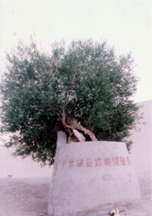
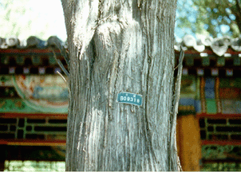

Guan Yin Lin
The Bodhisattva Tree at Mingsha Mountain in the Gobi Desert near Dunhuang
Old Cypress at the Emporer's Summer Palace, Beijing, China:

Note:
From what I could understand, the small metal tags on the trees mean that they are part of a government list and that the various colors signify the age of the tree. Also, it seems that the significance of the tag colors varies from province to province. If anyone has futher information about this system, could you please send e-mail to me at the address below?
 Return to Main Page
Return to Main Page